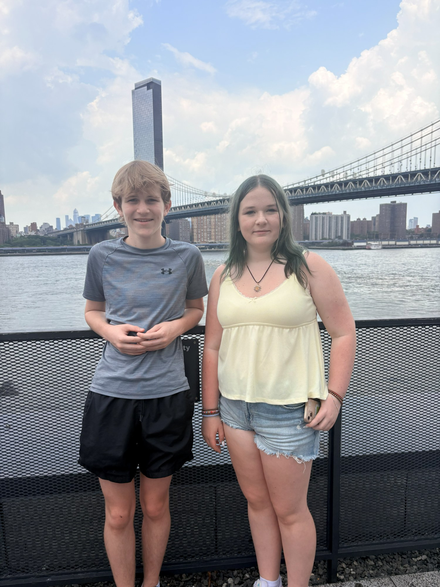
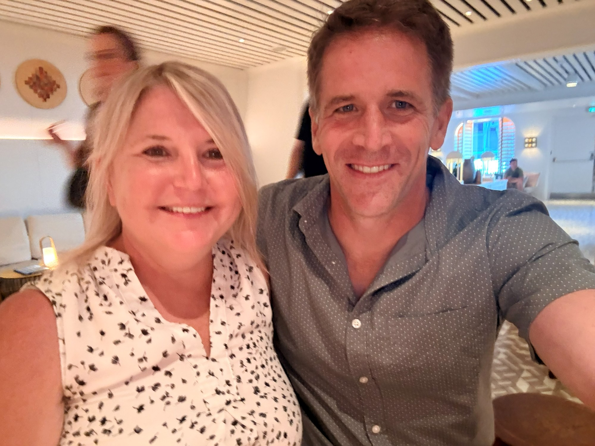
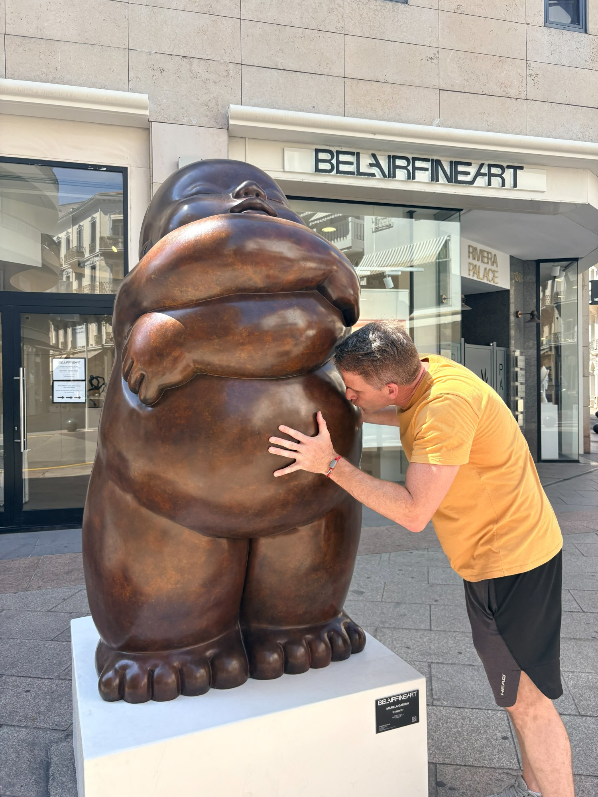
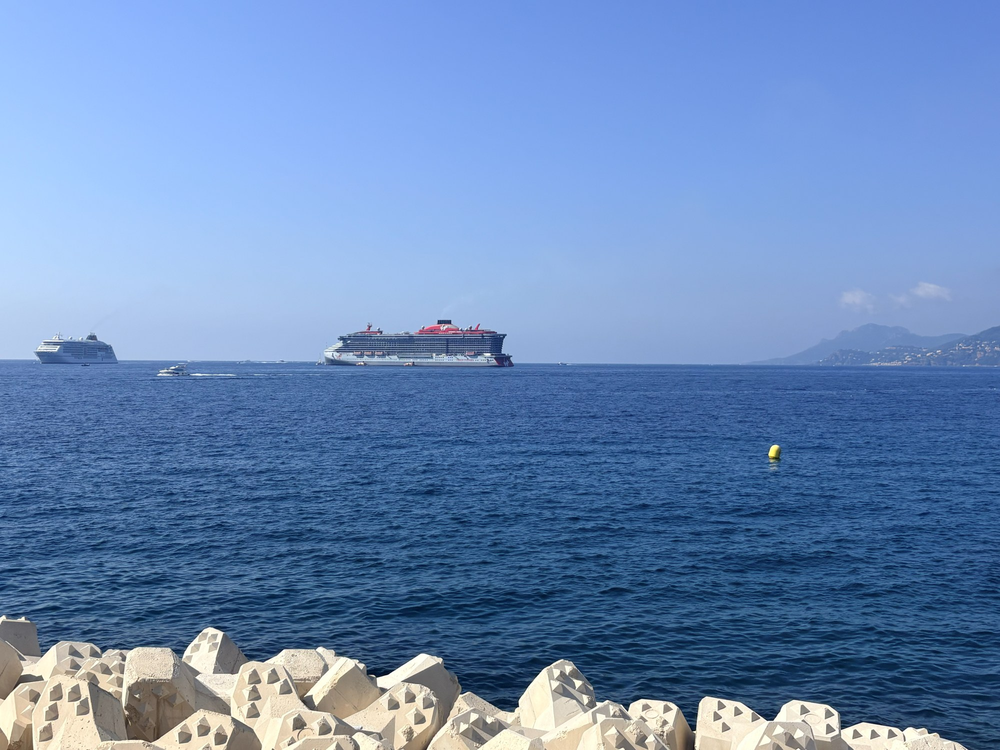

Off the clock
The other side of the ledger — Shona, Layla, Aaron, and the places we've dragged each other to. No commit hashes on this page.




Next generation
Aaron runs his own Minecraft channel. Building things, recording it, and putting it online — I have no idea where he gets it.